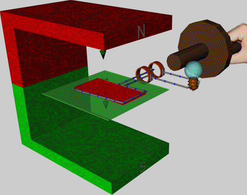

¡Bienvenidos a Tecnologías eléctricas!
Tecnologías eléctricas es un proyecto educativo de Rayo Artificial que tiene el objetivo de repasar las tecnologias utilizadas en la industria eléctrica y sus aplicaciones.
Generadores
Introducción
Un generador es una máquina que convierte la energía mecánica en energía eléctrica. La energía mecánica puede ser proporcionada por una turbina de gas, una turbina de vapor o una turbina hidráulica. Los generadores están formados por un rotor, un estátor, un devanado inductor ubicado en el rotor y un devanado inducido ubicado en el estátor.
Generadores síncronos
En un generador síncrono la velocidad de rotación es constante y es igual a:
$$n=\frac{60f}{p}$$donde $f$ es la frecuencia de la corriente generada y $p$ es el número de pares de polos del rotor.
Los generadores síncronos pueden clasificarse en:
- Turbogeneradores. En estos generadores el rotor está conectado a una turbina de gas o una turbina de vapor y se mueven a velocidades altas (1800 y 3600 RPM).
- Hidrogeneradores. En estos generadores el rotor está conectado a una turbina hidráulica (Pelton, Francis, Kaplan) y se mueven a velocidades bajas (de 120 a 900 RPM).
De igual forma, los rotores pueden dividirse en dos grupos:
- Rotores de polos lisos. En estos rotores el devanado inductor está distribuido en ranuras. Son usados cuando el número de polos del generador es uno o dos y, por lo tanto, las velocidades son altas, por ejemplo, en los turbogeneradores. Su diseño previene esfuerzos mecánicos (fuerza centrífuga) en los polos del generador.
- Rotores de polos salientes. En estos rotores el devanado inductor se instala en forma de arrollamiento concentrado. Son usados cuando el número de polos del generador es alto y, por lo tanto, las velocidades son bajas, por ejemplo, en los hidrogeneradores.
Principios de operación
Generalmente, los rotores de los generadores síncronos son electroimanes. Es decir, por el devanado inductor circula una corriente continua la cual origina un campo magnético (ley de Ampère). Este campo interactúa con el devanado del estátor e induce una tensión en sus terminales (ley de Faraday). Una excitatriz suministra la corriente continua al devanado inductor a través de dos anillos colectores.
Referencias
- Fitzgerald, Kingsley y Umans (2003). Electric Machinery. McGraw-Hill.
- Mora (2003). Máquinas eléctricas. McGraw-Hill.
- Papailiou (2021). Springer Handbook of Power Systems. Springer Singapore.
- Generator
- Dynamo wechsel
{kind=link}
{kind=link}
Motores
Introducción
Un motor es una máquina que convierte la energía eléctrica en energía mecánica. La energía eléctrica es proporcionada por una fuente de corriente monofásica o polifásica. Los motores están formados por un rotor, un estátor y una caja de bornes.
Motores de inducción
Un motor de inducción es una máquina asíncrona, es decir, su velocidad de rotación no es igual a la velocidad de sincronismo dada por frecuencia de la red.
Los rotores de los motores de inducción pueden dividirse en dos grupos:
- Rotor en jaula de ardilla. Estos rotores están formados por una serie de barras de cobre o aluminio colocados en las ranuras de dos anillos laterales cortocircuitados en todo momento. Las barras del rotor forman un pequeño ángulo con el eje para reducir el ruido del motor y prevenir el bloqueo causado por la atracción magnética entre el rotor y el estátor. Los motores con jaula de ardilla son más baratos y requieren menos mantenimiento.
- Rotor devanado. Estos rotores están formados por un arrollamiento similar al del estátor. Este arrollamiento suele tener una conexión en estrella con los terminales conectados a unos anillos colectores que permiten insertar resistencias para reducir la corriente de arranque. Por esta razón, estos motores son usados en grúas y polipastos en donde la corriente de arranque es alta.
Principios de operación
Cuando un motor de inducción se conecta a una fuente de corriente alterna, la corriente en el devanado del estátor crea un campo magnético giratorio la cual se mueve con una velocidad de sincronismo igual a:
$$n=\frac{60f}{p}$$Este campo induce una tensión y, por lo tanto, una corriente en el devanado del rotor. Usando la ley de Faraday, la tensión inducida en un conductor de longitud $L$ que se mueve a una velocidad $v$ dentro de un campo $B$ se puede expresar como:
$$ e = (v \times B) \cdot L$$Referencias
- Fitzgerald, Kingsley y Umans (2003). Electric Machinery. McGraw-Hill.
- Mora (2003). Máquinas eléctricas. McGraw-Hill.
- Papailiou (2021). Springer Handbook of Power Systems. Springer Singapore.
Transformadores
Introducción
Un transformador es un dispositivo que aumenta o disminuye la tensión en un circuito eléctrico. Los transformadores puede ser clasificado dependiendo de la fuente de corriente alterna en monofásicos y trifásicos.
Construcción
Los principales componentes de un transformador son:
- Devanados.
- Núcleo.
- Bushings.
- Sistema de refrigeración.
- Sistema de protección.
Transformadores en paralelo
Para poder acoplar dos transformadores en paralelo se deben cumplir las siguientes condiciones:
- Los transformadores deben pertenecer al mismo grupo de conexiones.
- Los transformadores deben tener las mismas tensiones primarias y secundarias, y por lo tanto, la misma relación de transformación.
- Los transformadores deben tener las mismas tensiones de cortocircuito.
Referencias
- Fitzgerald, Kingsley y Umans (2003). Electric Machinery. McGraw-Hill.
- Mora (2003). Máquinas eléctricas. McGraw-Hill.
- Papailiou (2021). Springer Handbook of Power Systems. Springer Singapore.